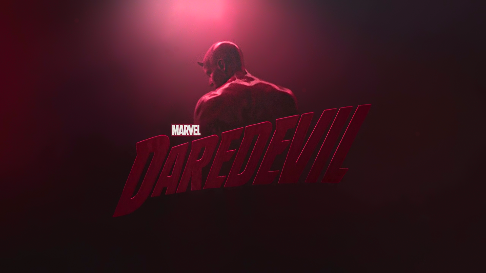
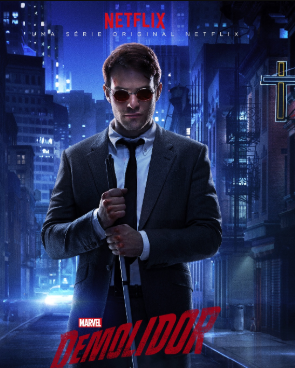
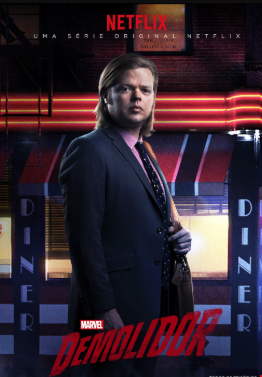
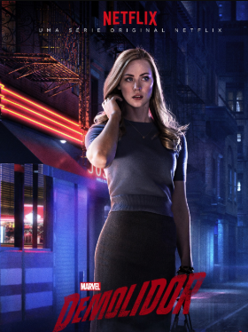
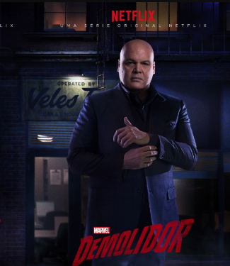
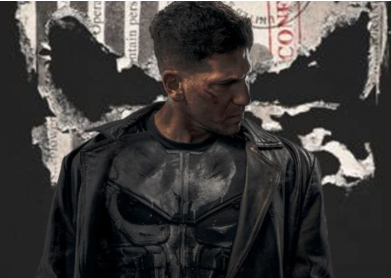
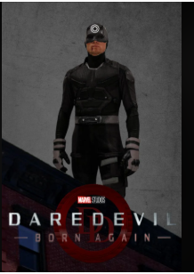

Demolidor
⠙ ⠁ ⠗ ⠑ ⠙ ⠑ ⠧ ⠊ ⠇
O homem sem medo
⠨⠞ ⠓ ⠑ ⠍ ⠁ ⠝ ⠺ ⠊ ⠞ ⠓ ⠕ ⠥ ⠞ ⠁ ⠋ ⠑ ⠁ ⠗

Sobre a série
A série segue Matt Murdock, um advogado cego que usa seus sentidos aumentados, adquiridos depois de um acidente quando criança, para lutar nas ruas de Hell’s Kitchen, New York.
Personagens principais

Demolidor
Matt Murdock, Advogado cego durante o dia, vigilante durante a noite.

Foggy Nelson
melhor amigo, advogado e sócio de matt murdock.

Karen Page
jornalista investigativa, aliada e interesse amoroso de matt murdock.

O rei do crime
Wilson Fisk, empresário inescrupuloso e um dos chefões do crime mais poderosos de Nova York, conhecido por sua força física e influência política.

O justiceiro
Frank Castle, conhecido por sua brutalidade e métodos extremos, muitas vezes questionáveis, mas sempre motivados por um código de honra pessoal.

o Mercenário
Benjamin "Dex" Poindexter, assassino conhecido por sua habilidade letal, qualquer coisa em suas maõs pode virar uma arma.